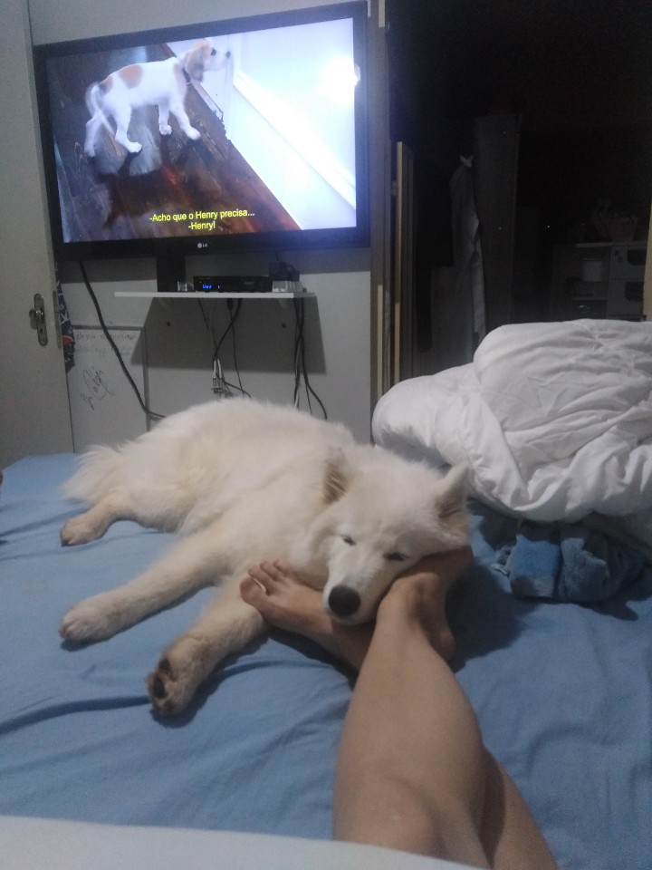

- Dog
- Cat
- Humming Bird
Why the dog is so cute
Domestic dogs
inherited complex behaviors, such as bite inhibition, from their wolf ancestors, which would have been pack hunters with a complex body language.
These sophisticated forms of social cognition and communication may account for their trainability, playfulness and ability to fit into human households and social situations.
These attributes have given dogs a relationship with humans that has enabled them to become one of the most successful animals today.
The dogs' value to early human hunter-gatherers led to them quickly becoming ubiquitous across world cultures.
Dogs perform many roles for people, such as hunting, herding, pulling loads, protection, assisting police and the military, companionship and aiding disabled individuals.
This influence on human society has given them the nickname "man's best friend" in the Western world. In some cultures, however, dogs are also a source of meat.
It is important to show the information simple and clean, which means it is more useful in business cuz it is easy to be detected in search engin and also for humanistic reason..
não esqueça de fazer upload do arquivo pelo ctrl+o, unsplash.com for image

My cute little Myla